Fascia the music
by Rob Voisey
Early in 2000, when development of the Mk.2 was already well underway, a discussion on the BBS raised an issue that had cropped up a number of times since the launch of the original car player - styling. The Mk.1 sported a flat plexiglass front panel, which was only slightly machined to present a very plain profile. It wasn't until the player was switched on and the visuals fired up that the product really came to life.
Participants on the BBS began to discuss ways in which the styling of the panel could be improved, and some even went to the extent of producing mocked up diagrams of their ideas. It was at this time that I decided to go out on a limb and set in motion a project that I had been considering for some time - a completely new style for the empeg car player.
By complete chance, whilst I was attending a leisure show at Earls Court related to a non-empeg project ( www.q2000.com ), a representative from a product design bureau stopped by the booth. I was impressed with their brochure and gave the company, J.B. Design, a call the next day. They were enthusiastic about the car player and seemed keen to learn more of our plans to restyle the product, so we set up a meeting. It took little time before I knew that these were the right people to work on our project.
In April John and Barney from J.B Design presented six concepts to Hugo, Mike and myself. In a critical meeting we had to decide there and then which design to proceed with - time was not on our side and it was imperative to press ahead with design and tooling as quickly as possible. The designs ranged from conventional through retro to bizarre but they all had something to offer. After some deliberation we chose a concept inspired by the wing profile of an aircraft - we knew it would be controversial, and we were nervous in choosing it, but we couldn't bring ourselves to choose anything more conventional. If our technologies were ground breaking, why should our asthetics be anything less?
The concept was quickly translated into a CAD design, and a number of renderings were produced, each successively more detailed than the last. When we were happy with the overall design we commissioned an SLA physical model, created from a tank of polymer solution using lasers. As you can see from the photos, some imagination was required to conceptualise the final product. In fact we determined that the design had to be changed slightly, as it masked a proportion of the VFD screen, so a second SLA was produced a few weeks later. This time everything was perfect!
It was now time to convert the designs to a tool into which plastic would be injected to form the screen, fascia and front panel controls. This process proved to be the most stressful of the project, with a number of errors and glitches resulting in some lost sleep for everyone involved. Even after getting the tooling perfected we still had the long job of colour matching the fascias, screens and controls.
Now the design is complete we are able to market a product that we believe to be as fantastic on the outside as it always has been on the inside. We hope you'll agree that the time and money invested in this new fascia has been very worthwhile.
Pencil to Product, the Photos
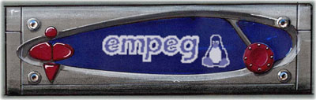
original concept sketch
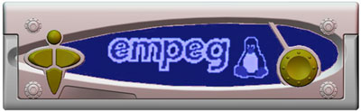
low quality rendering
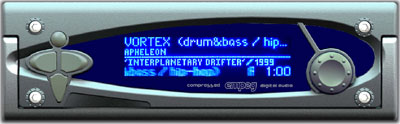
high quality rendering - silver option
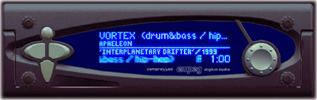
high quality rendering - black option
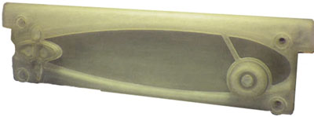
SLA fascia, the first physical plastic produced
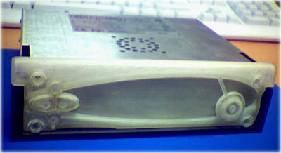
SLA model test fitted to a player
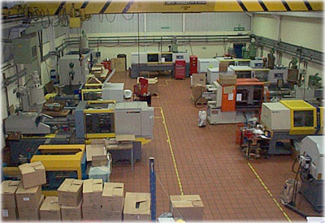
production floor at D.A.W. in Sussex, who manufacture
the fascia
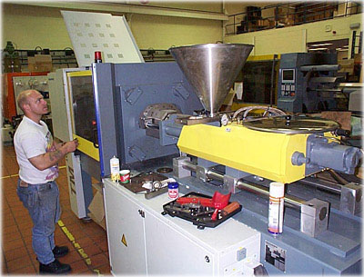
injection moulding machine, loading with our
tool
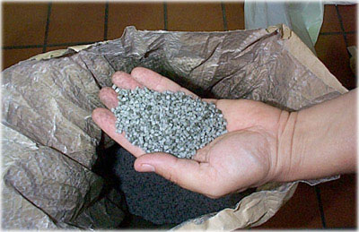
raw material - plastic granules mix with dye
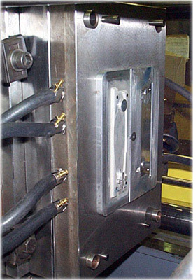
the fascia tool - or rather, one half of it
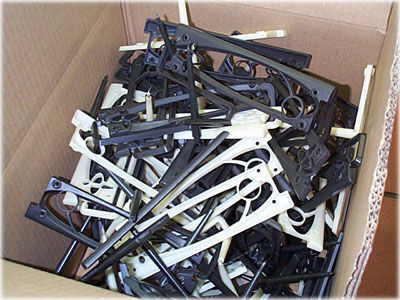
there were a few false starts before the process was perfected
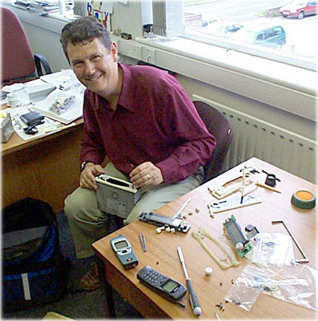
John (from J.B) tweaks the very first panel
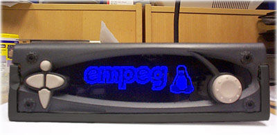
trial fit - everything lines up!